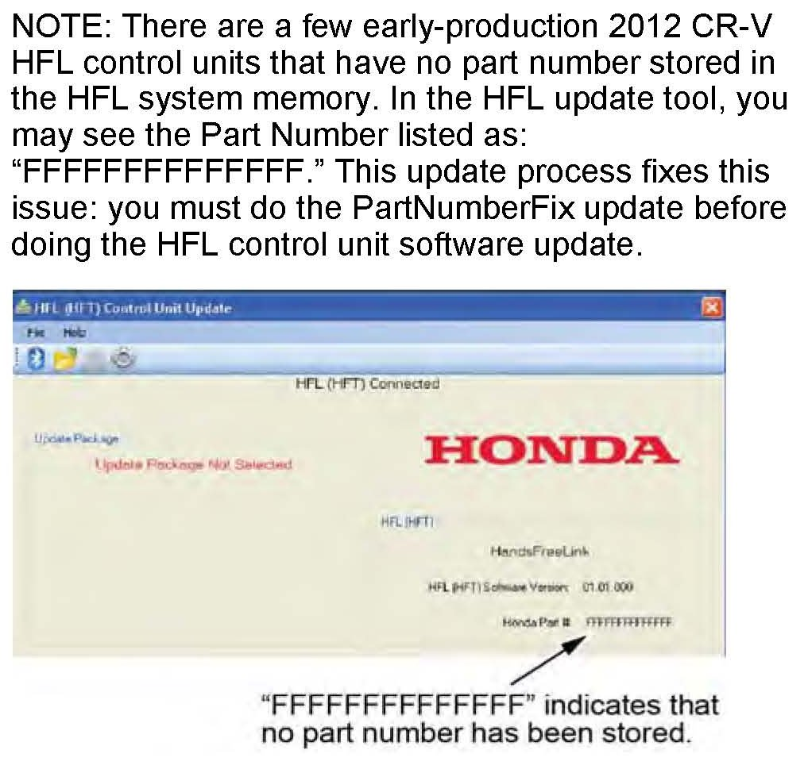
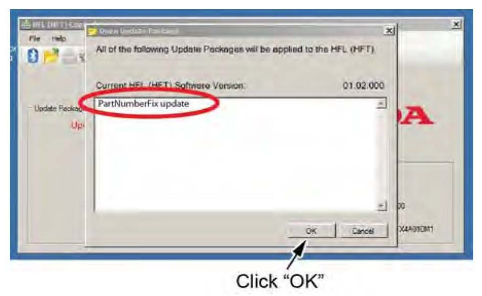
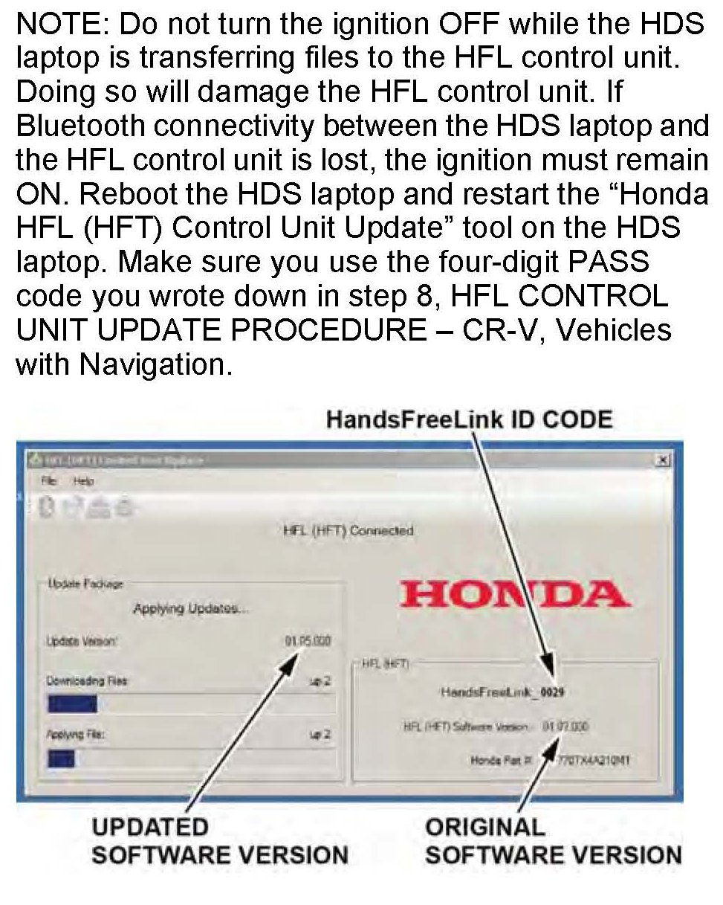
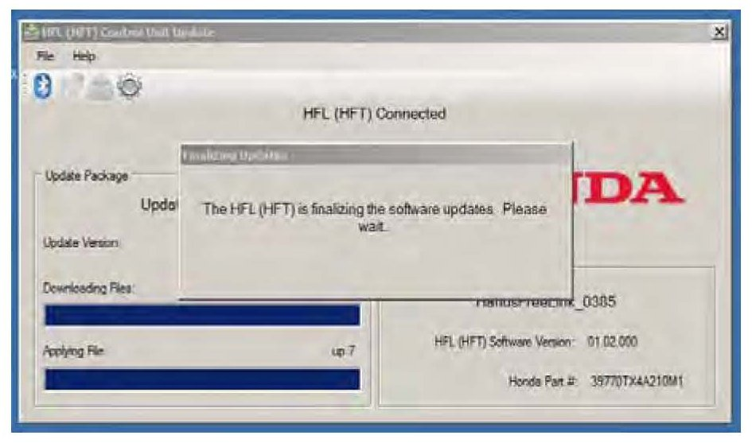
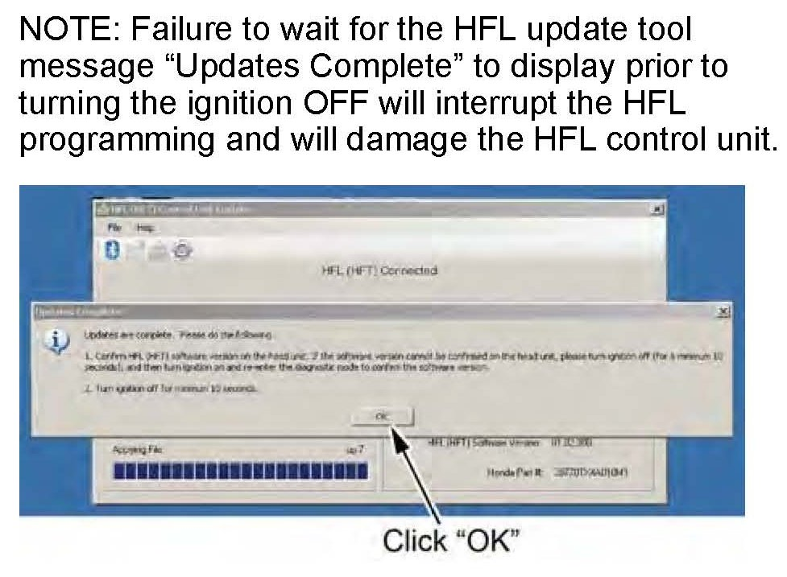
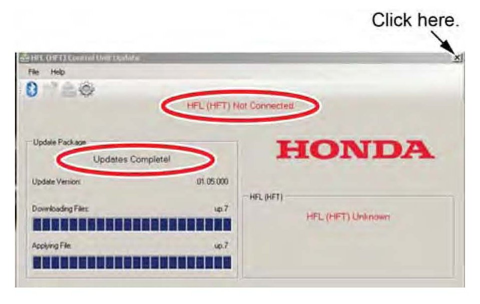
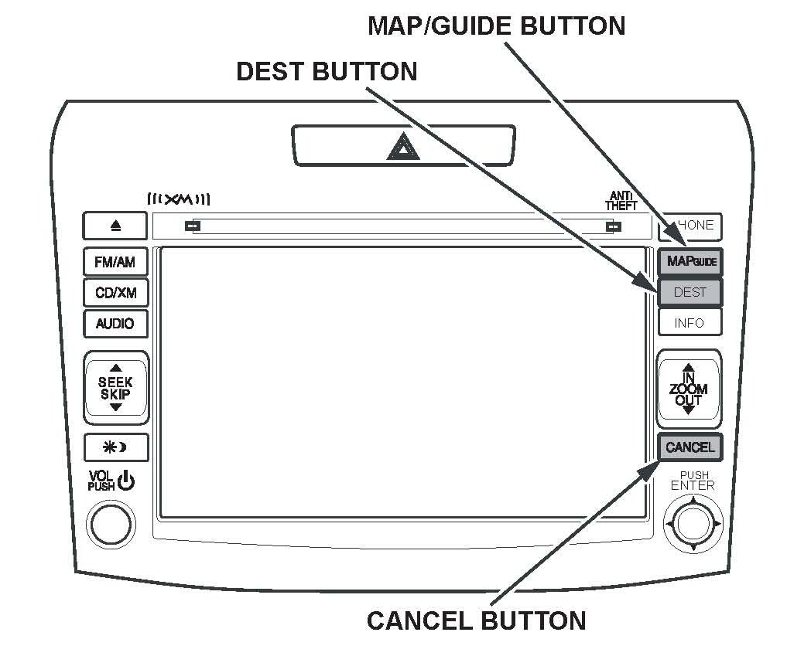
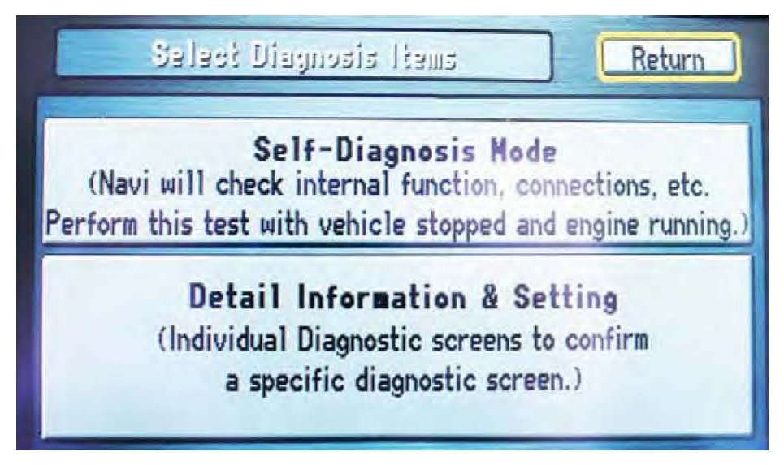
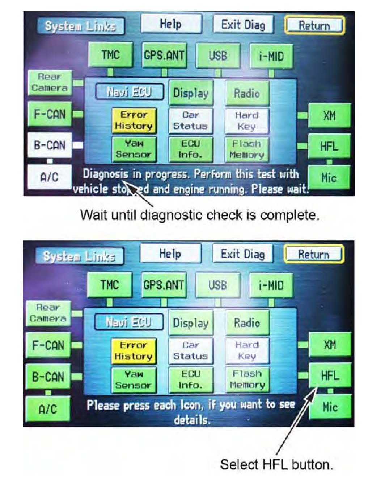
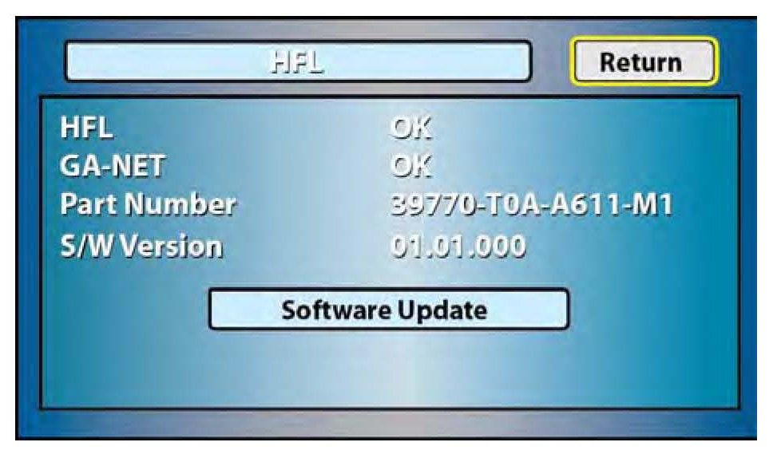

Vehicles With Navigation

NOTE

1. In the HFL update tool, highlight "PartNumberFix.update" and then click OK.

2. The PartNumberFix update begins. Allow several minutes for the programming to complete. The blue bars indicate the programming status and progression.

3. In the HFL update tool, a pop-up window alerts you when the part number fix update is finalizing, and then another pop-up informs you that the update has completed.

4. In the HFL update tool, click OK when the pop-up window indicates the update is complete.

5. The HFL update tool will indicate the update is complete, and disconnect the Bluetooth connection with the HFL control unit. Close the HFL update tool by clicking on the "X" in the upper right-hand corner.
6. Confirm the HFL software version: the HFL software update shown on the navigation screen may not show the same results as the HDS laptop. Turn the ignition OFF and wait 10 seconds before going to step 7.

7. Turn the ignition switch ON.
8. Wait for the navigation system to boot up. When the disclaimer screen appears, press and hold the MAP/GUIDE, the DEST, and the CANCEL buttons for at least 5 seconds until the Select Diagnosis Items screen appears.

9. Select Self Diagnosis Mode.

10. The System Link screen appears and does an automatic diagnostic check. Wait a few moments while the process completes. Once completed, select the "HFL" icon.

11. On the navigation screen, confirm the PartNumberFix update was successful:
^ If a valid Part Number is displayed, the PartNumberFix update is complete. You must now update the HFL control unit software. Go to HFL CONTROL UNIT UPDATE PROCEDURE - CR-V, Vehicles with Navigation.
^ If the Part Number is displayed as:
"FFFFFFFFFFFFFF", the PartNumberFix update is not complete, go to step 1 to repeat the part number fix update procedure.